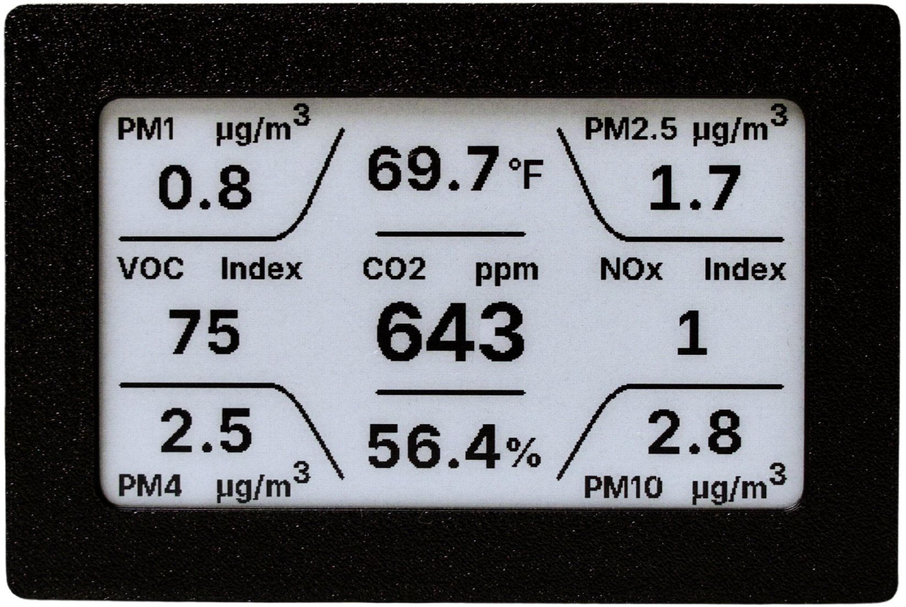

Meet Aether.
Your open-source and local-only indoor air quality monitor.

1. Power It On
Connect Aether to power using a USB-C cable. Once plugged in, the e-paper display will initialize and show the Aether logo before jumping into the main dashboard.
Note: The display may flicker black and white during boot. This is completely normal for e-paper screens as they clear residual ghosting.
2. Connect to Wi-Fi
Connecting to Wi-Fi allows you to access the device's local Web UI to view live metrics, connect to Home Assistant, and receive OTA updates.
- Open the Wi-Fi settings on your phone or computer.
- Look for a network starting with aether- (e.g., aether-a1b2c3).
- Connect to it. A setup portal should automatically open.
- Select your home Wi-Fi network and enter the password.
3. The Display & Metrics
Aether tracks 9 different environmental metrics. The e-paper screen updates every 500ms when data changes.
4. Button Controls
The physical side button on the device controls display modes and resets.
-
Short Press
Device Information
Switches to the Info screen, which displays the device's hostname and IP address, and QR codes for the instruction manual and local web dashboard.
-
Long Press (3s+)
Factory Reset
Hold for 3 seconds to initiate a factory reset, then hold again for 3s to confirm.
5. The Web UI
Once connected to Wi-Fi, Aether hosts a responsive web interface on your local network. You can use it to:
- View real-time sensor metrics
- Change temperature units (°F / °C)
- Check firmware versions and perform OTA updates
Access it by navigating to your device's IP hostname (e.g., aether-a1b2c3.local) address in your browser. These addresses can be found in the 'Device Information' screen.
6. Home Assistant
Because Aether runs ESPHome, it features a native API over Wi-Fi. Aether will automatically appear in your Home Assistant integrations dashboard once connected to your network. It securely exposes all 9 sensor metrics (CO2, Temp, PM2.5, PM4, PM10, Humidity, VOC, NOx) right out of the box.

Need Help?
If you encounter any persistent issues, you can perform a full recovery using the Factory flash option in the Firmware & Updates tab above.
For full documentation, advanced configuration, or to report an issue, please visit the Aether GitHub Repository.
USB Flashing & Updates
Setup, recovery, and updates over USB
Use this page to flash a new Aether device, recover an existing unit, or install the latest firmware over USB. For routine updates, use the device's local web UI when it is already on your network.